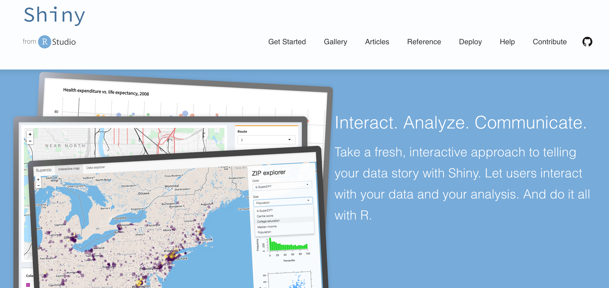
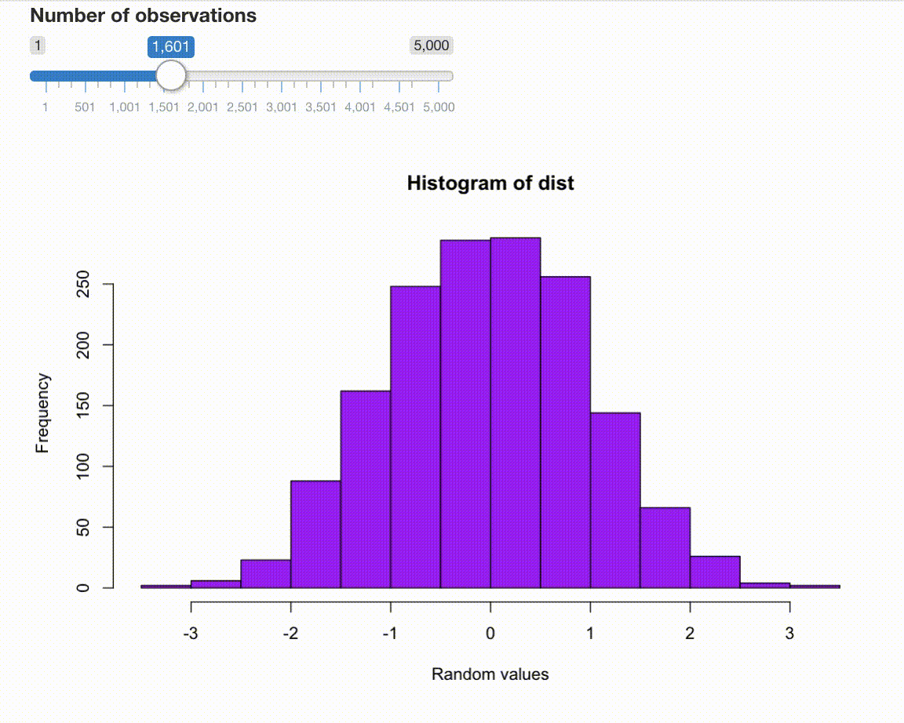

Shiny
R is the language of statistical computing, Shiny is the fastest way to build interactive data science applications.

What is R
R is a free software environment for statistical computing and graphics. It compiles and runs on a wide variety of operating systems.
Visit the Comprehensive R Archive Network (CRAN) for installation instructions.
R, either using its base functionality or the tidyverse packages, is superb for both interactive and non-interactive use.
What is Shiny
Shiny is an R extension package that that makes it easy to build interactive web apps. This is the reason it is ideal for quickly making prototypes, but it is also a decent choice for building production-ready applications.
info
Installing Shiny
Once you have R installed, it is also useful to have an integrated development environment (IDE): pick either the free RStudio Desktop or VS Code with R language support.
Install Shiny by running the following line in R:
A Shiny example
The following simple example draws a histogram of randomly generated numbers between 0 and 1. As you increase the number of observations, the top of the distribution changes slightly:

We are going to build this simple Shiny app next.
Structure of a Shiny app
The following sections will show how Shiny apps are structured:
- the user interface (UI),
- the server function,
- and the app that contains the UI and the server.
Contact us!
Reach out to Analythium if you need commercial support and consulting services!